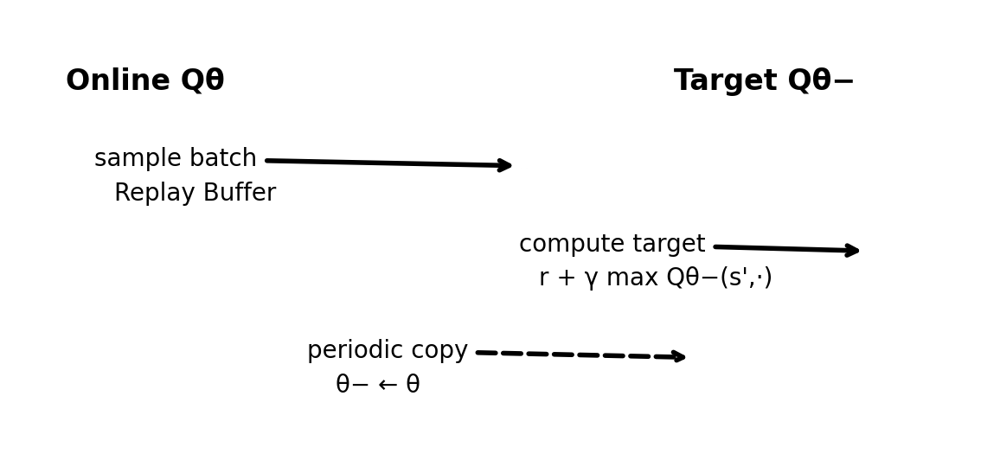

04 · DQN：用神经网络来学 Q(s,a)¶
这一章目标：理解"为什么表格法不行、为什么神经网络直接套 Q-learning 会不稳定、DQN 的两个稳定器是什么"。
核心概念: Replay Buffer, Target Network 图解:
figures/04_dqn_replay_target.png代码:code/dqn/
0. DQN 的两大稳定器（Replay + Target）¶

flowchart TB
subgraph Data[交互数据]
env[Environment] -->|"s,r,s'|" buf[Replay Buffer]
end
subgraph Learn[训练]
buf -->|random batch| q[Online Qθ]
qT[Target Qθ⁻] -->|计算 target| loss[TD Loss]
q -->|预测 Q(s,a)| loss
loss -->|梯度下降 | q
q -. "每隔 N 步拷贝" .-> qT
end1. 为什么表格 Q-learning 不够用¶
表格法的要求：对每个 (s,a) 存一个数
| 环境 | 状态数 | 表格法可行？ |
|---|---|---|
| Gridworld | 25 个状态 | ✅ 没问题 |
| 象棋 | ~10⁴³ 状态 | ❌ 存不下 |
| Atari | 84×84×4 像素 | ❌ 根本不可能 |
解决方案：
用神经网络
Q_θ(s,a)近似 Q(s,a)
2. 直接"Q-learning + 神经网络"会不稳定的原因¶
如果你直接用
来训练同一个网络Q_θ，会出现两个主要问题：
问题 A：目标在动（moving target）¶
问题 B：样本强相关（correlated samples）¶
3. DQN 的两个关键稳定器¶
3.1 经验回放 Replay Buffer¶
做法：把经历 (s,a,r,s',done) 存起来，然后随机采样训练
| 好处 | 说明 |
|---|---|
| 打破时间相关性 | 连续样本 → 随机样本 |
| 提升样本利用率 | 一条经验可以训练多次 |
典型大小：10⁴ ~ 10⁶ 条经验
3.2 目标网络 Target Network¶
做法：维护两个网络
| 网络 | 职责 | 更新方式 |
|---|---|---|
| Online Q_θ | 负责被训练 | 每步梯度更新 |
| Target Q_θ⁻ | 负责算 target | 每隔 N 步从 Q_θ 拷贝 |
target 计算：
好处：
target 稳定很多，训练更收敛
典型更新频率：每 100~1000 步拷贝一次
4. DQN 的训练流程（你应该能复述）¶
1. 用 ε-greedy 与环境交互
↓
2. 把经验 (s,a,r,s',done) 放进 Replay Buffer
↓
3. 从 Buffer 随机采一批（如 32 条）
↓
4. 用 TD loss 训练 Q_θ
loss = (target - Q_θ(s,a))²
↓
5. 每隔 N 步更新一次 Target 网络（θ⁻ ← θ）
5. 进阶但常见的 DQN 改进（知道名字就够）¶
| 改进 | 核心思想 | 效果 |
|---|---|---|
| Double DQN | 选动作用在线网，评估用目标网 | 减少过估计 |
| Dueling DQN | 把 V(s) 和 Advantage 分开建模 | 更好处理无关状态 |
| Prioritized Replay | 更常采"TD error 大"的样本 | 提升样本效率 |
| Noisy Nets | 把探索写进网络噪声 | 替代 ε-greedy |
6. 本仓库的最小 DQN（为了可读性做的取舍）¶
| 简化 | 说明 |
|---|---|
| 环境 | gridworld（离散动作） |
| 状态编码 | one-hot（方便解释） |
| 网络 | 两层 MLP（容易读） |
文件：code/dqn/train_dqn_grid.py
运行：
你应该看到：
Episode 100: avg_return = -1.8, loss = 0.42
Episode 200: avg_return = -0.9, loss = 0.28
Episode 300: avg_return = -0.3, loss = 0.15
...
7. 小练习¶
- 调整 target 更新频率：把目标网络更新频率调大/调小，会发生什么？
-
提示：太频繁→不稳定，太少→学习慢
-
缩小 replay buffer：把 replay buffer 变得很小，会更不稳定吗？为什么？
-
提示：样本多样性降低，相关性增加
-
实现 Double DQN：核心是"选动作用在线网，评估用目标网"
-
添加 Prioritized Replay：给 TD error 大的样本更高采样概率
8. 进一步阅读¶
| 资源 | 说明 |
|---|---|
| DQN 原论文 | DeepMind 2013 |
| Double DQN | 减少过估计 |
| Dueling DQN | V+Advantage 分解 |
| Prioritized Replay | 重要样本优先 |
下一章：05 · PPO 最小实现